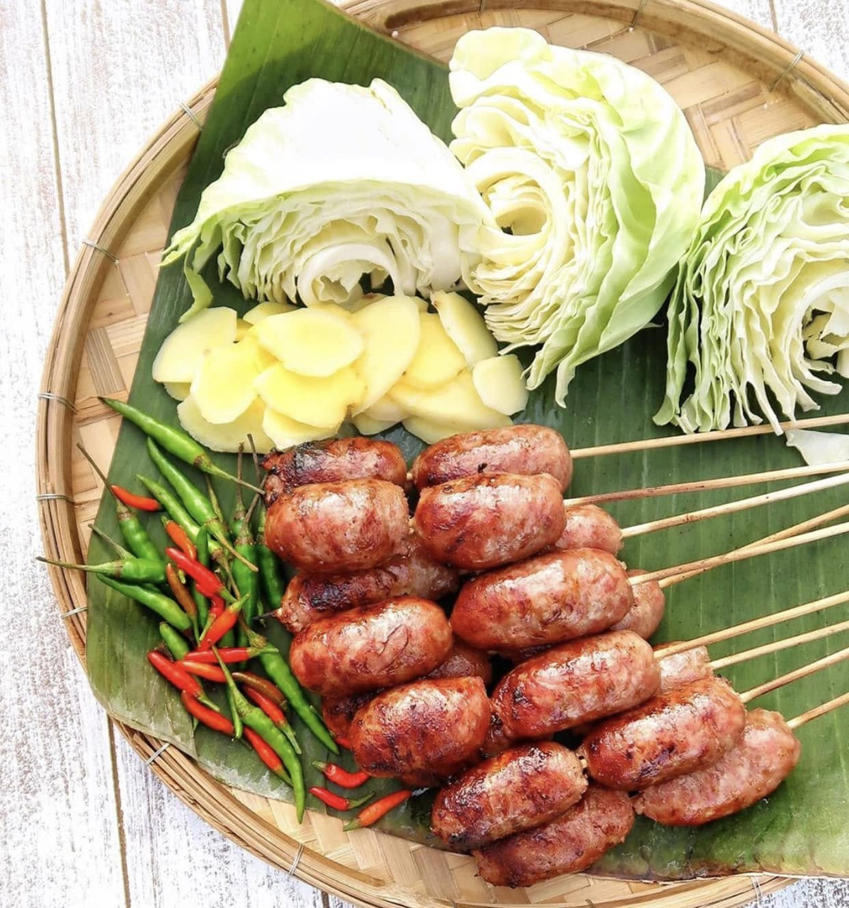
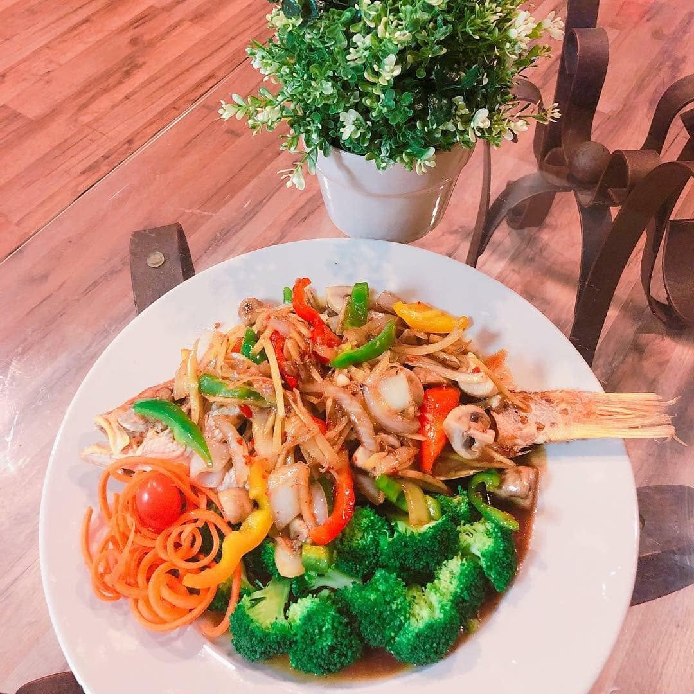

Authenticity
No diluted recipes. We honor the ancestral ratios of herbs, spices, and high-heat wok technique.
Established 1983
The Meaning of iThaiz
In Thailand, dining is a shared expression of community and love. “iThaiz” was born from a desire to preserve the uncompromising tastes of traditional Bangkok and Southern Thai home kitchens, translating them into a luxurious modern environment.
Since opening our doors in Richmond in 1983, we have remained family-owned. Our legacy is built on spice, technique, and warm hospitality.

No Compromises
We believe that true Thai food requires fresh, high-quality, unaltered ingredients. Galangal, lemongrass, kaffir lime leaves, and bird's eye chilies are crushed daily to guarantee our pastes and curries maintain dynamic, energetic flavors.
Every dish is prepared customized to order, respecting the deep, layered balance of sweet, sour, salty, and aromatic.

Our Foundations
No diluted recipes. We honor the ancestral ratios of herbs, spices, and high-heat wok technique.
Hand-picked local produce paired with premium herbs imported directly from trusted growers in Thailand.
Inspired by the classic “Land of Smiles”. Serving you with authentic grace, attentiveness, and quiet luxury.
Culinary Architects
With over 35 years in fine-dining kitchens across Bangkok and North America, Chef Chalermwat heads our culinary operations. His dedication to retaining authentic heat levels and meticulous preparation processes keeps the iThaiz heritage pristine.
“We cook with patience. Thai food is an art form of intricate balance—there are no shortcuts.”

Visual Indulgence